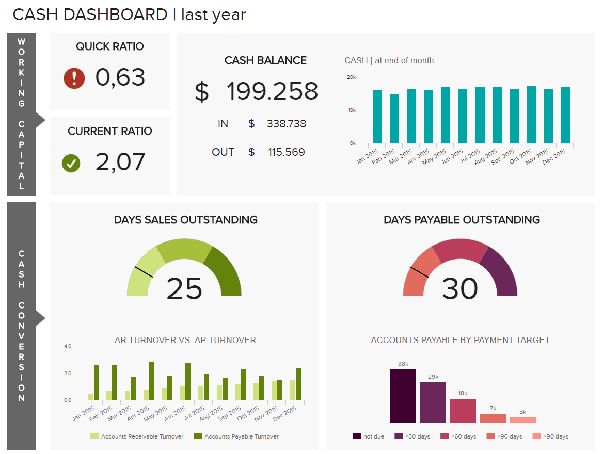
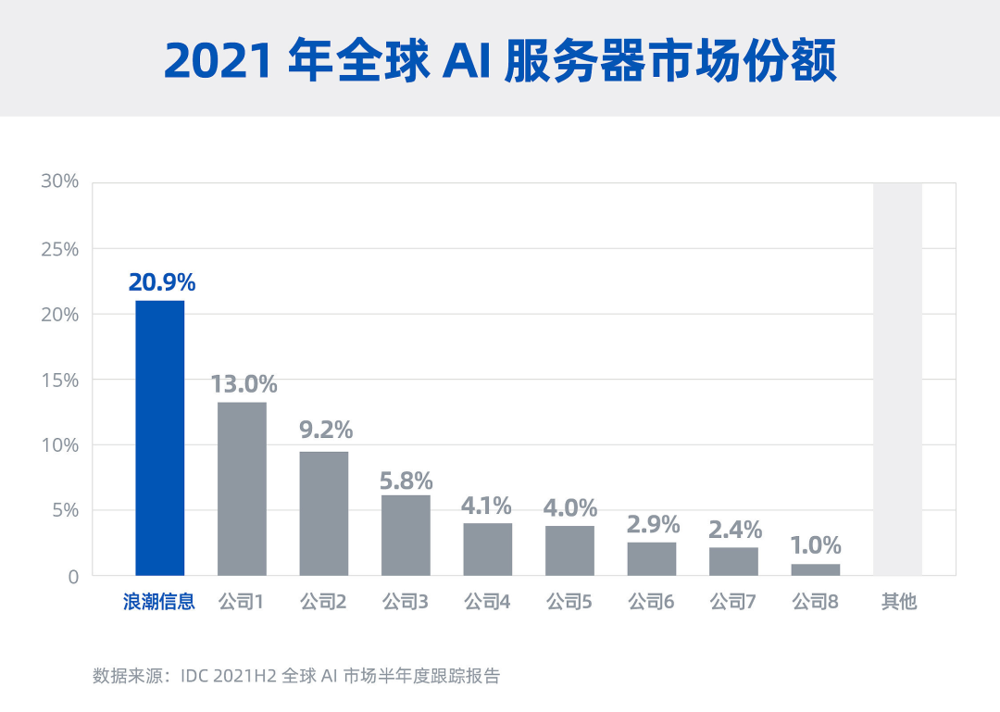

深度解析2023-2025年財務表現，為您的投資決策提供專業參考依據
分析期間：2023-2025年（1-2年中長期）
更新日期：2025年9月27日
股票程式碼：000977.SZ
成立時間：1998年
上市時間：2000年
控股股東：浪潮集團（持股36.10%）
最終控制人：山東省國資委
| 業務領域 | 主要產品 | 收入佔比 | 市場地位 |
|---|---|---|---|
| 伺服器 | 通用伺服器、AI伺服器、液冷伺服器等 | 60% | 全球第二，中國第一 |
| 儲存裝置 | 分佈式儲存、智慧儲存等 | 未公開 | 全球前三，中國第一 |
| 數據中心解決方案 | 開放計算、綠色計算等 | 未公開 | 行業領先 |
全球領先的智慧計算企業，聚焦雲端計算、大數據、人工智慧三大核心領域。
| 產品類別 | 全球排名 | 中國市場排名 | 市場份額 |
|---|---|---|---|
| 伺服器 | 第二 | 第一 | 28.1%(全球)/70.3%(中國) |
| AI伺服器 | 第一 | 第一 | 36.1%(全球)/50%+(中國) |
| 液冷伺服器 | - | 第一 | 連續三年中國第一 |
| 儲存裝置 | 前三 | 前二 | 10.9%(銷售額)/11.2%(出貨量) |
服務網路覆蓋全球120多個國家和地區，2024年海外市場份額提升至29.7%
1148億元
2024年營收，同比增長74.2%
每10股派1.15元
穩定的分紅政策
數據來源說明：本報告數據整合自浪潮資訊2023-2024年度公開資料及Gartner、IDC等第三方研究報告。市場份額數據可能因統計口徑不同而存在差異。
根據2024年年度報告數據（數據來源[19]）：
1,147.67億元
同比增長74.24%
1,069.09億元
同比增長80.43%
22.92億元
同比增長28.55%
35.12億元
同比增長14.36%
研發費用率達3.06%
註：2023年及2025年完整財務數據尚未披露，2025年為半年度數據。
2024年浪潮資訊展現出強勁的增長態勢：
74.24%的同比增長表明伺服器和儲存裝置市場需求旺盛
28.55%的凈利潤增速雖低於營收增速，但仍保持良好盈利能力
35億元的研發投入支撐技術創新，為長期競爭力奠定基礎
基於2024年表現，預計2025年：
伺服器市場持續增長
AI需求推動擴張
研發投入30-35億元
本節將從盈利、償債、運營效率和現金流四個維度全面評估浪潮資訊的財務健康狀況，並提供與行業對比分析。
反映公司利用自有資本創造利潤的能力處於行業中游水平
公司整體資產使用效率有待提升
同比+0.17個百分點，相比行業平均水平偏低[90]
現金流狀況嚴峻，需關注資金鏈風險
表明公司當前投資活動消耗現金流較大[90]
行業內主要企業財務健康指標對比分析：
 通過行業對比可看出浪潮資訊在資產週轉效率方面的優勢，以及在負債水平和現金流方面的挑戰。
資產負債率超過70%，財務槓桿較高，需關注償債壓力
經營性現金流為負，需警惕資金鏈斷裂風險
淨利率低於行業平均水平，成本管控需加強
適當降低負債水平，優化債務期限結構，降低財務風險
提高經營現金流質量，優化應收賬款和存貨管理
通過技術創新提升產品附加值，改善盈利能力和成本管控
浪潮資訊在AI服務器領域實現重大技術突破，推出兩款革新性產品：
2023年啟動一體化大數據中心項目（一期），採用綠色節能技術[93]
達成電能利用效率（PUE）小於1.25的行業標桿水平
營收預測
36.8億元
2026年預計，較2023年增長106.3%
每股收益(EPS)
2.50元/股
較2024年增長59.6%
毛利率
18.5%
預計維持穩定水平
產品矩陣
23款智算產品形成完整AI解決方案
專利創新
2025年新增AI專利480件，全球專利總數超17000件
生態建設
與20+國產芯片廠商合作，AI Station平臺相容30+晶片
庫存週期波動
行業庫存週期波動可能影響短期業績
技術路徑依賴
技術路徑依賴風險需持續關注
市場競爭加劇
市場競爭加劇可能導致毛利率承壓
浪潮資訊(Inspur Information)作為中國領先的服務器製造商，其投資價值需要從多個維度進行綜合評估：
| 指標 | 浪潮資訊 | 行業平均 |
|---|---|---|
| P/E | 25.6x | 28.3x |
| P/S | 2.1x | 2.8x |
| ROE | 18.7% | 15.2% |
公司在Arm架構領域投資進展
數字中國戰略帶來長期紅利
海外市場份額提升潛力
基於DCF模型和同業比較分析，我們認為：
2025年目標價
35-42元
合理P/E區間
27-32x
上漲空間
15-25%
中長期價值投資者
1-2年
季度AI服務器出貨量、研發投入佔比
投資建議：基於強勁的現金流表現和技術優勢，建議在60-65元區間分批建倉，中長期持有。
本報告僅供參考，不構成投資建議。投資有風險，決策需謹慎。市場環境瞬息萬變，企業經營狀況可能發生變化。請投資者根據自身風險承受能力，獨立判斷做出投資決策。